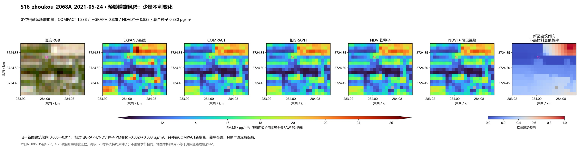
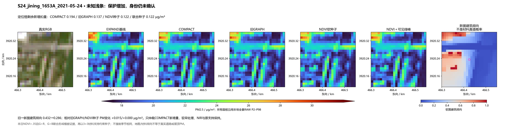
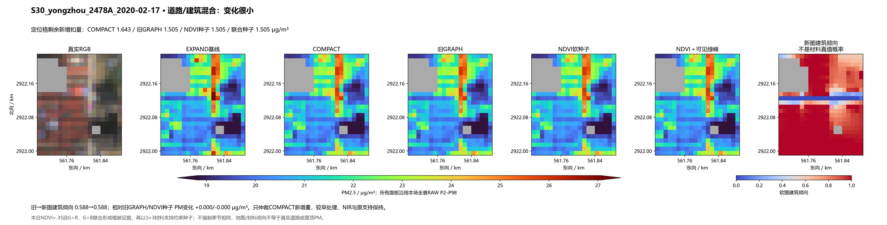
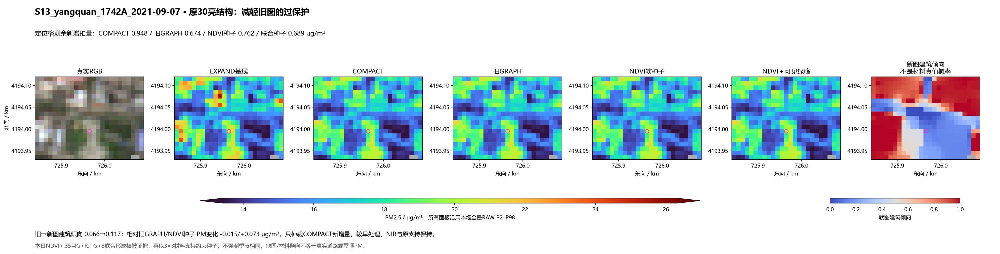
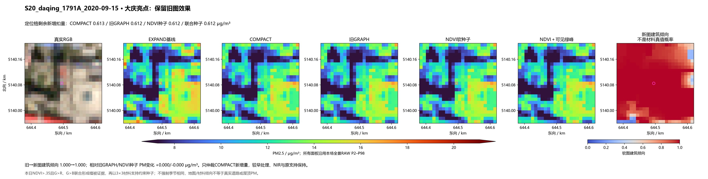
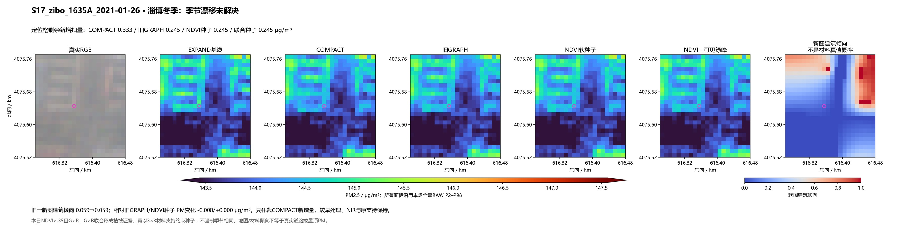
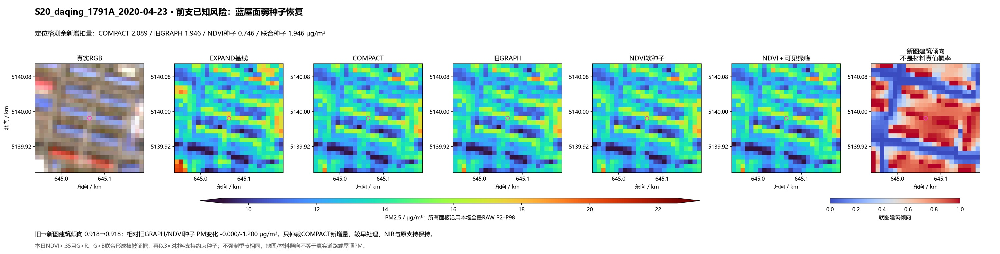
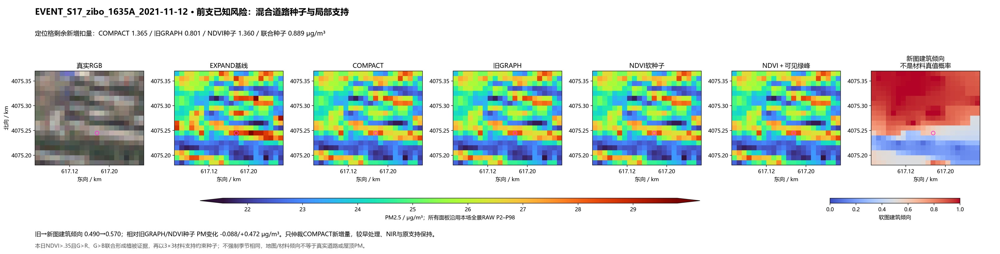
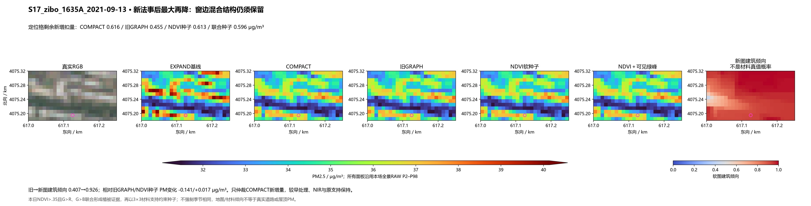
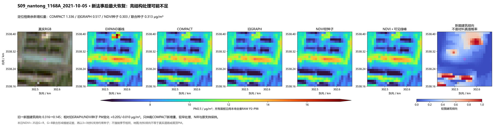

原156＋真实事件50，共206场，0拟合。原四带边权不变，以NDVI与可见绿峰联合证据识别植被疑似格，3×3支持形成软锚约束；只仲裁COMPACT新增扣量。八图均沿用前支固定检查，末两图为前支已经暴露的失效场。每场各法同RAW色限、同原支持。
结果与局限 · 冻结机制 · 必要指标 · 固定输入概率读数
大庆25个蓝色外观建筑种子全部保住；该定位格恢复到旧GRAPH的1.946 μg/m³新增扣量。淄博事件的额外削减从0.559减至0.088。原30对象均值、道路交格保护和站点PM指标变化都很小；四季材料倾向漂移尚未改善，不替换默认方案。
旧GRAPH剩余新增扣量 0.828 → 联合可见证据种子 0.830 μg/m³；实际PM变化 -0.002。

旧GRAPH剩余新增扣量 0.137 → 联合可见证据种子 0.122 μg/m³；实际PM变化 +0.015。

旧GRAPH剩余新增扣量 1.505 → 联合可见证据种子 1.505 μg/m³；实际PM变化 +0.000。

旧GRAPH剩余新增扣量 0.674 → 联合可见证据种子 0.689 μg/m³；实际PM变化 -0.015。

旧GRAPH剩余新增扣量 0.612 → 联合可见证据种子 0.612 μg/m³；实际PM变化 +0.000。

旧GRAPH剩余新增扣量 0.245 → 联合可见证据种子 0.245 μg/m³；实际PM变化 -0.000。

旧GRAPH剩余新增扣量 1.946 → 联合可见证据种子 1.946 μg/m³；实际PM变化 -0.000。

旧GRAPH剩余新增扣量 0.801 → 联合可见证据种子 0.889 μg/m³；实际PM变化 -0.088。

本次计算后的两端极值诊断，未参与机制或选点。旧GRAPH剩余新增扣量 0.455 → 联合种子 0.596 μg/m³；PM变化 -0.141。

本次计算后的两端极值诊断，未参与机制或选点。旧GRAPH剩余新增扣量 0.517 → 联合种子 0.313 μg/m³；PM变化 +0.205。
